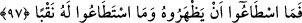
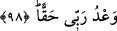

97. Bu sebeple onu ne aşmaya muktedir oldular ne de onu delebildiler.
“Bu sebeple” Ye’cûc ve Me’cûc “onu ne aşmaya muktedir oldular ne de onu
delebildiler.” Yâni getirmekle emrolundukları bakır parçalarını getirdiler. Zülkarneyn
(a.s.) da onu üzerine döktü, karıştırdı, birbirine yapıştırdı. Böylece sert bir dağ gibi
oldu. Ye’cûc ve Me’cûc gelip onun üzerine çıkmak ve onu delmek istediler; sed yüksek
ve sert olduğu için üzerine çıkamadılar, alttan delip tahrip etmeye de güçleri yetmedi.
Bu büyük bir mûcizedir. Çünkü toplanan bu demir parçalarına ateşin harâreti tesir ettiği
zaman, ateş gibi oluncaya kadar ona üflemek yahut bakır parçalarını onun üzerine
dökmek şöyle dursun bir canlının onun etrafında dolaşması bile imkansızdır. Sanki
Allah Sübhanehû ve Teâlâ bu büyük harâretin tesirini bu işe teşebbüs edenlerin
bedenlerinden uzaklaştırmış ve olanlar olmuştur. Allah her şeye kadirdir. İmam
(Râzî)’nin tefsîrinden naklen el-İrşâd’da böyle geçmektedir.
Fakir (Bursevî) der ki: Muhtelif çarelerden biriyle uzaktan dökülmesi ve üflenmesi
uzak bir ihtimal değildir. Görmez misin ki Nemrud’un ateşi kimsenin yaklaşamayacağı
şekilde olunca, mancınık kullanarak İbrâhim (a.s.)’ı oraya attılar.
Bir rivâyete göre bir adama Rasûlullah (s.a.)’e bu seddi gördüğünü haber verdi.
Rasûl-i Ekrem (s.a.): “Onu nasıl gördün?” dedi. O da: “Alacalı kumaş gibi siyah bir
yol ve bir de kırmızı yol.” dedi. Hz. Peygamber (s.a.) de: “Evet, onu görmüşsün.”
buyurdu.[219] Çünkü kırmızı yol bakırdan, siyah yol demirdendi.
98. Zülkarneyn: “Bu, Rabbimden bir rahmettir. Fakat Rabbimin vaadi gelince, O,
bunu yerle bir eder. Rabbimin vaadi haktır.” dedi.
“Zülkarneyn: “Bu” sed, “Rabbimden” bütün kullarına, özellikle onun yolunda
mücâdele edenler için büyük bir nîmet ve “bir rahmettir.” Zülkarneyn (a.s.) bu sözüyle
şunu haber vermek istemiştir: Bu, âdeten mahlûkun teşebbüsü ve fiili ile meydana gelen
eserler kabîlinden değildir. Bilâkis benim gayretimle ortaya çıkmış olsa da, bu bir ilâhî
ihsan ve lütuftur.
“Fakat Rabbimin vaadi gelince,” Vaad, vaad olunan demektir. O da kıyâmet günüdür.
Vaadin gelmesinden maksad, Deccal’in çıkması, Îsâ (a.s.)’ın inmesi ve diğer büyük
kıyâmet alâmetlerinin görülmesidir.
“O, bunu” sağlam ve güçlü olmasına rağmen işaret edilen seddi “yerle bir eder.”
Yâni ufalanmış, zayıflamış, yerle bir edilmiş hâle getirir. Burada Allah Teâlâ’nın